Deup Docs¶
Deup 是一个浏览第三方资源的应用, 您可以在这里通过编写的 JS 脚本来预览视频, 音乐, 图片, 文档等资源。
Apple TestFlight: https://testflight.apple.com/join/1JgZvpWZ
屏幕截图¶
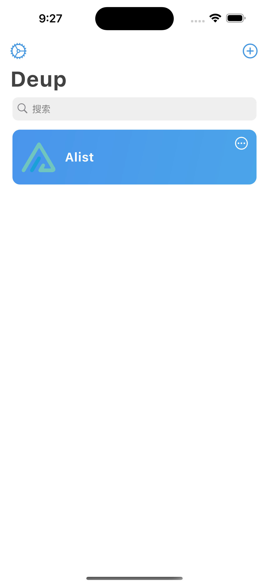 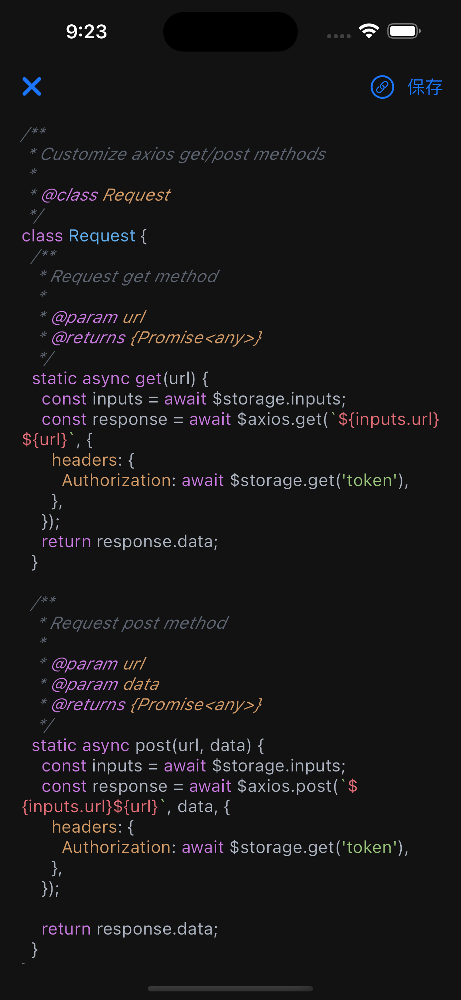 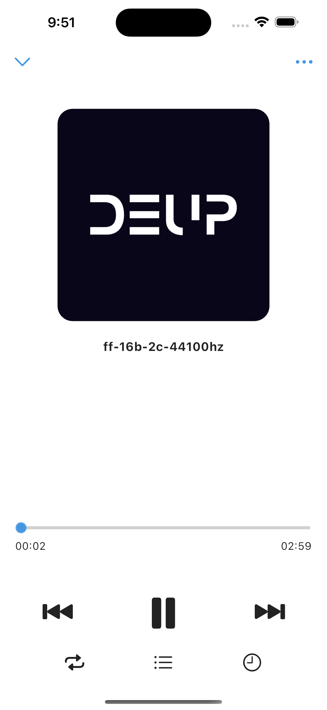
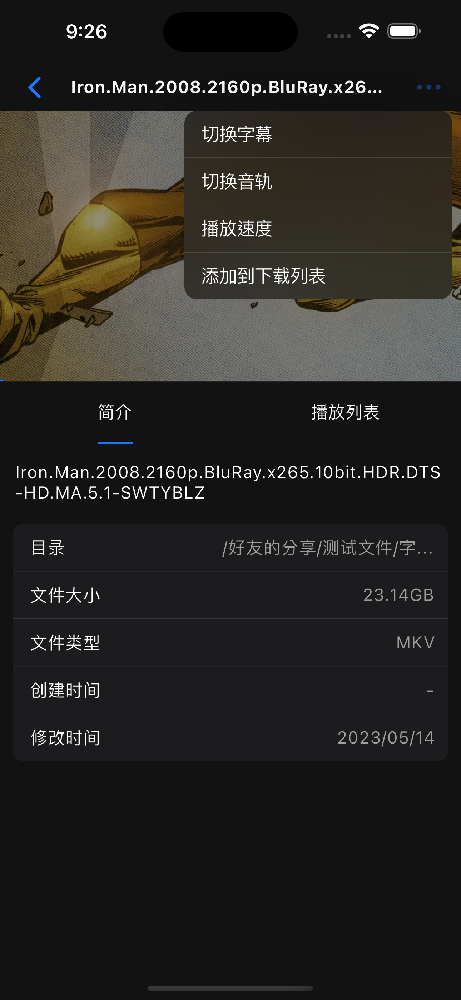 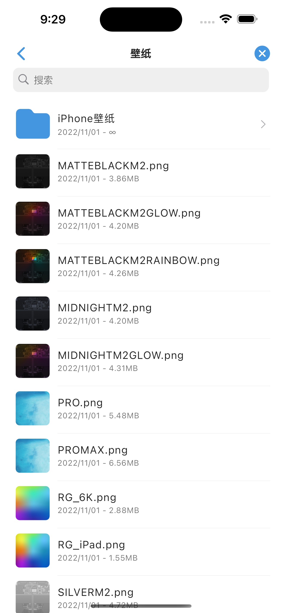 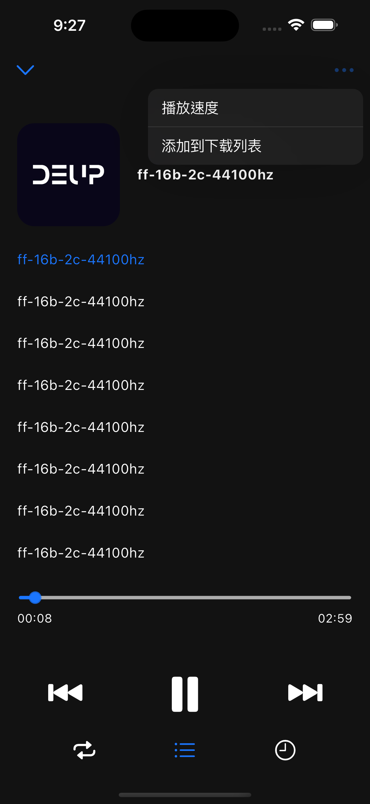
 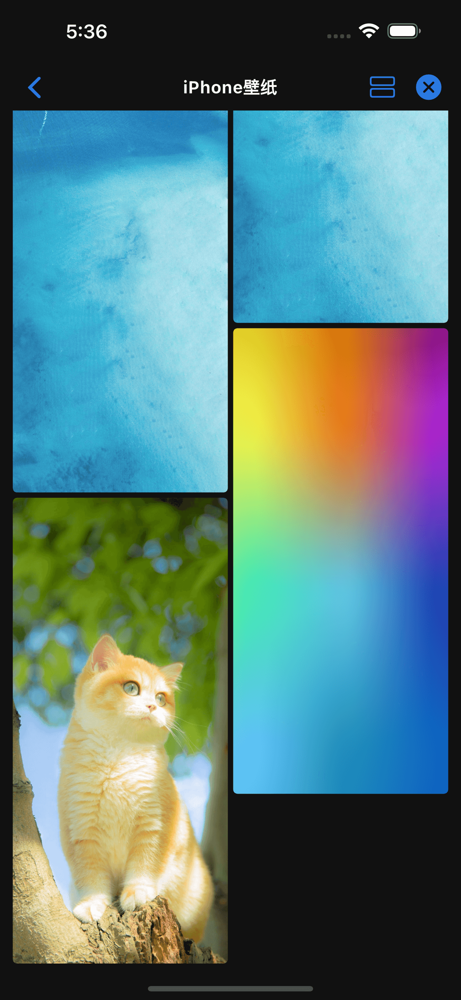 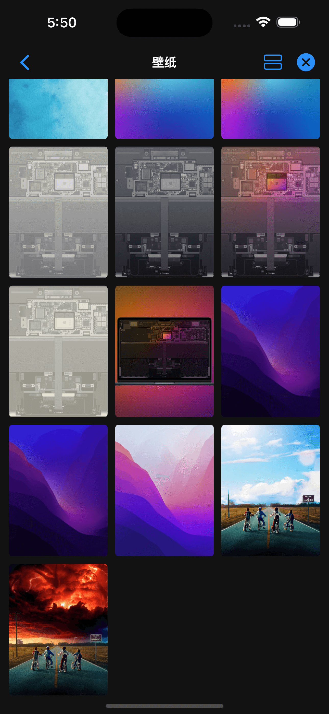
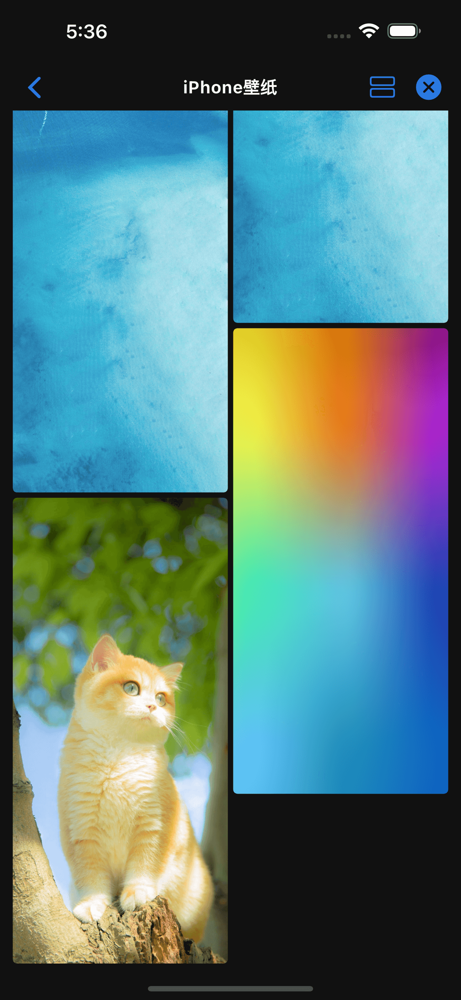 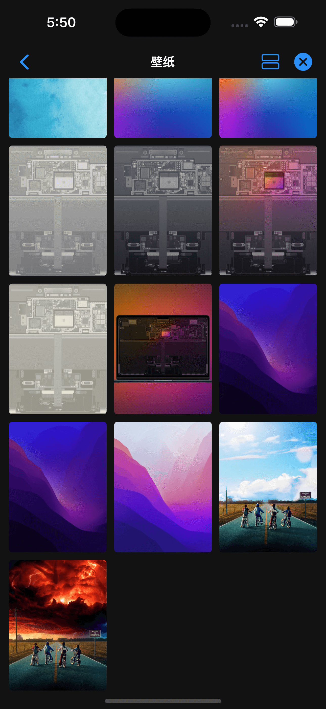
Deup 是一个浏览第三方资源的应用, 您可以在这里通过编写的 JS 脚本来预览视频, 音乐, 图片, 文档等资源。
Apple TestFlight: https://testflight.apple.com/join/1JgZvpWZ
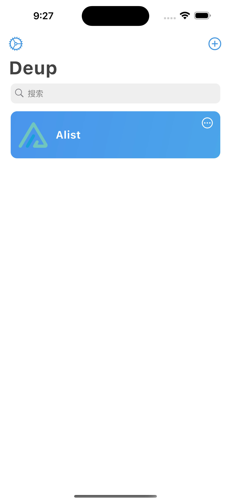 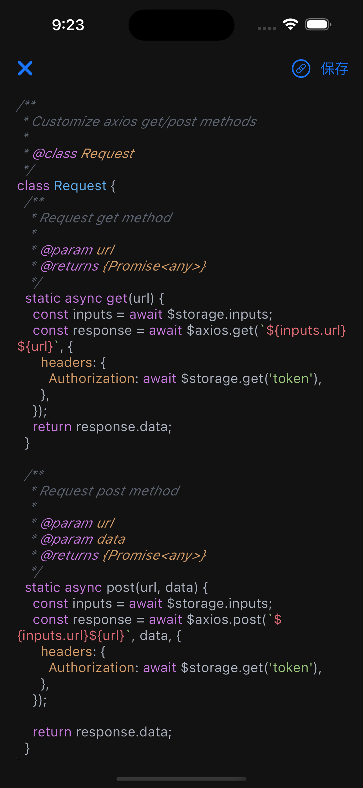 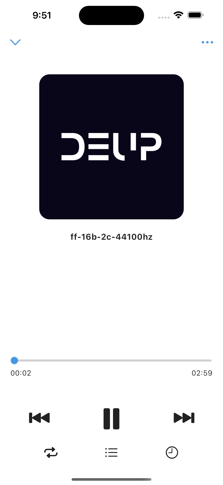
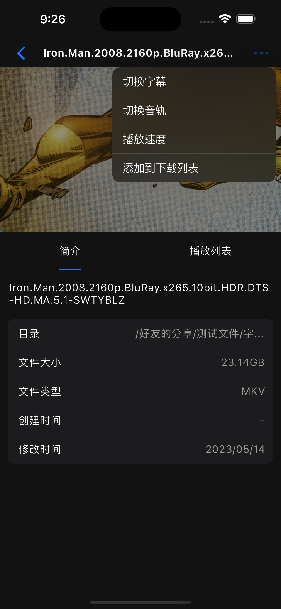 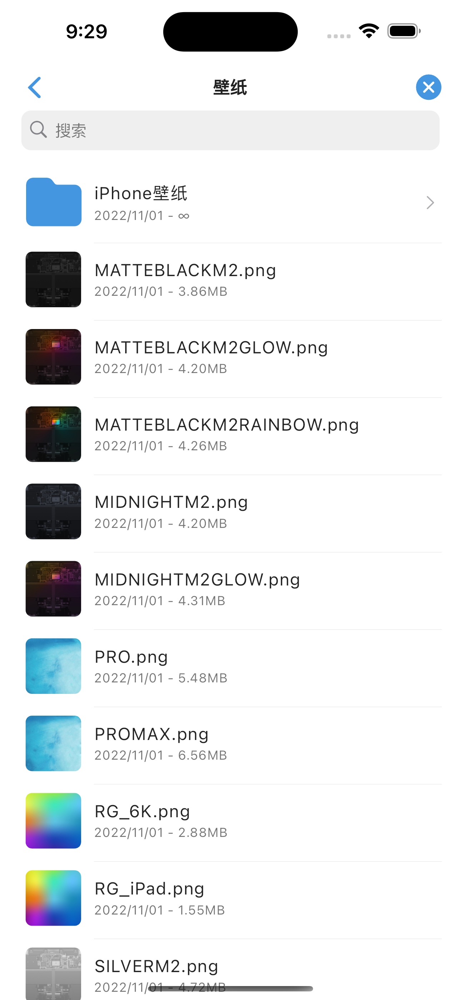 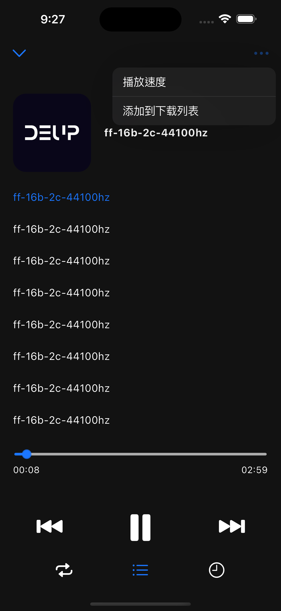
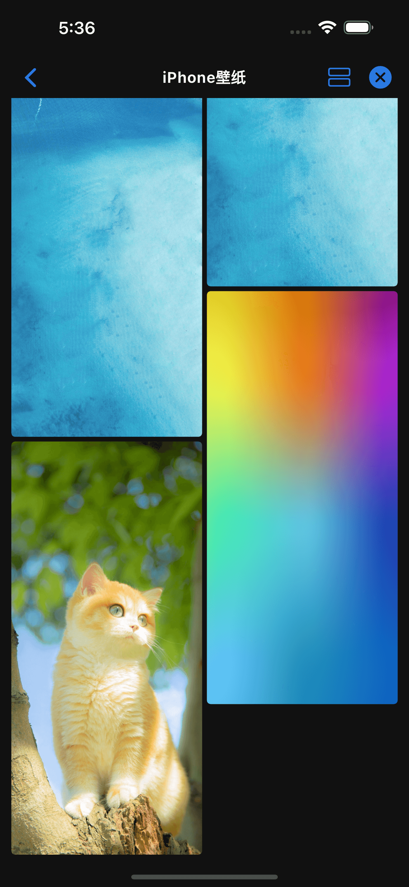 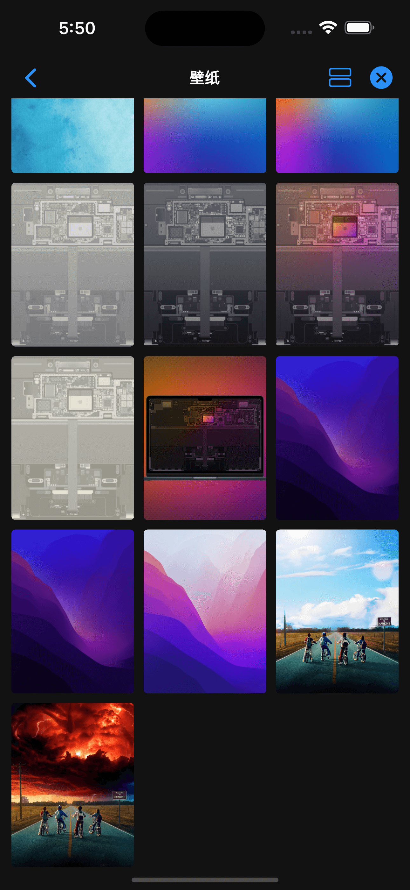